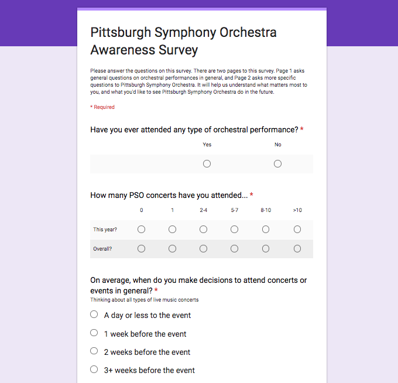

Pittsburgh Symphony Orchestra
3 months
Helping millennials make a fun and easy to access entertainment choice so they don’t need to put forth the extra effort to plan around events.
As classical music becomes more and more niche to younger generations, Pittsburgh Symphony Orchestra found a growing difficulty attracting new audience members and retaining existing users. The challenge was evident in Pittsburgh Symphony Orchestra’s 2014-2015 season, where its difficulty to fill 2,662 seats met with a drop in overall ticket revenues of 4 percent. Sales for the flagship subscription series Mellon Grand Classics dropped 11 percent, and Pops concert series dropped 6 percent. I saw the potential to increase Pittsburgh Symphony Orchestra concert-goers and revenue through design and market research, so I created a team of three to approach Pittsburgh Symphony Orchestra with our project plan.
Since PSO’s current subscription model has a number of selections (Pops and Fuse) that are designed to compel younger generation, we identified two major target users for the project: millennials who enjoy classical concerts but do not have friends who have the same shared interests and students who are not particularly keen on going to classical music concerts but are willing to try something new.
Melissa is a 20 year old student studying biology at Carnegie Mellon University. Her hobbies include playing the violin and cooking. She used to frequent her local orchestra before she went to college, but has not had the chance to listen to a live orchestra since. She is a busy person who would love to make time to listen to an orchestra play, but planning with a friend to go with her last minute proves difficult because she does not know how much time to allocate for the concert specifically. Additionally, the transportation to and from downtown is long and infrequent.
Brandon is a 19 year old student studying computer science at Carnegie Mellon University. He does not have a particular interest in classical music, but enjoys movie and game scores. While he is willing to go out with friends and explore new things with them, he does not want to spend a lot of money going out.
These are the groups who are in their late teens to 20s, are in university for at least four years, have the purchasing power to decide where the budget for entertainment goes, and have a potential of introducing a large number of new patrons to Pittsburgh Symphony Orchestra. We wish to improve participation of these two major groups as they are the ever-changing group that may generate more publicity beyond four years of their time in university. At the same time, we wish to address the pain points this group faces of interests, price, time, and transportation.
I was fortunate to work in a team with varying backgrounds. I come to the team with traditional classic music training. Wendy prefers music that are trending, and Ben mostly listens to music while he trains as an athlete. The diverse take on music allowed us to carry the project with an open lens as we completed our competitive analysis, created the online survey, and brainstormed solution paths.
We started this project wanting to understand the landscape Pittsburgh Symphony Orchestra competed in. As a broad understanding that Pittsburgh Symphony Orchestra is in the entertainment business, we noted all those PSO had to compete with for the attention of millennials. Primary competitors included those directly entertaining with the arts, such as Pittsburgh Cultural Trust and movie theaters. Secondary competitors included other forms of entertainment, such as sports games.
From the secondary research, we jotted down gaps in our knowledge that we wanted to address and clarify in our initial client meeting. Two major insights evolved:
For our next step, we used our problem scope and specific insights to define our survey and interview experience. We asked questions to measure if the user’s understanding of Pittsburgh Symphony Orchestra matched with the one which PSO branded itself. We also asked questions to understand the process a user goes through to plan for different entertainment events. Each team member found two user participants to interview with. Using Google Forms, we created an online survey to collect 49 distinct results over the course of one night.
Analyzing all the qualitative and quantitative data we collected together, we drew specific marketing recommendations for our client to address three major problem components. In conjunction to the explanation of our solution, our original presentation is attached below.
While the time constraint made it so I was unable to personally implement the recommendations for Pittsburgh Symphony Orchestra to ideation, as of the 2016-2017 concert season, I was pleased to see that Pittsburgh Symphony Orchestra has since used parts of our recommendations.
I am thankful that this opportunity taught me the importance of verifying information with the firsthand user. Because messages may be lost in translation part way, miscommunication triggers become an opportunity for me to provide a marketing or design solution. Moving forward to future projects, I will learn to interact with each stakeholder to verify beliefs and understanding.
Download the PDF of our insights.